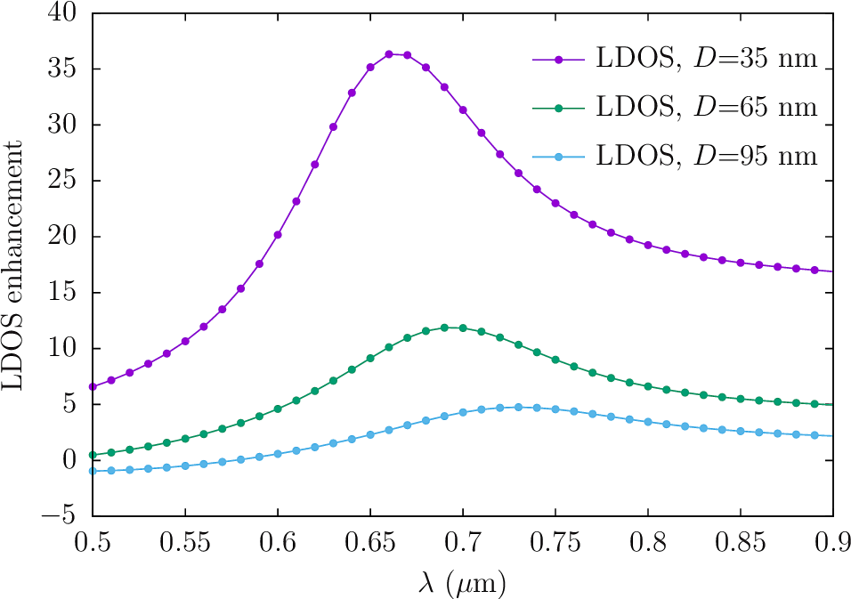

LDOS at the hotspot of a bowtie antenna
For our next trick, we'll investigate the local density of states (LDOS) and incident-field enhancement at the hotspot of bowtie antenna.
The input files for this example are in the PolarizationSensitiveAntenna
subdirectory of the
SCUFFTutorial archive. To avoid typing
folder prefixes at the command line, it's convenient to set up
scuff-em search paths
as follows:
% export SCUFF_MESH_PATH=${HOME}/SCUFFTutorial/PolarizationSensitiveAntenna/mshFiles
% export SCUFF_GEO_PATH=${HOME}/SCUFFTutorial/PolarizationSensitiveAntenna/scuffgeoFilesGMSH geometries and mesh files
The GMSH geometry file Triangle.geo in the .geoFiles folder
is similar to
the one we used in the previous exercise, but with different
default dimensions:
Triangle_Fine.mshSCUFF-EM geometry files
The scuffgeoFiles directory contains a series files named
Bowtie35_Medium.scuffgeo ... Bowtie95_Medium.scuffgeo
describing 4-point bowtie antennas with various tip-tip
separation distances:
Bowtie35_Fine.scuffgeoOBJECT NorthTriangle
MESHFILE Triangle_Medium.msh
DISPLACED 0.00 0.035 0.000
ENDOBJECT
OBJECT SouthTriangle
MESHFILE Triangle_Medium.msh
ROTATED 180 ABOUT 0 0 1
DISPLACED 0.00 -0.035 0.000
ENDOBJECT
OBJECT WestTriangle
MESHFILE Triangle_Medium.msh
ROTATED 90 ABOUT 0 0 1
DISPLACED -0.035 0.000 0.000
ENDOBJECT
OBJECT EastTriangle
MESHFILE Triangle_Medium.msh
ROTATED 270 ABOUT 0 0 1
DISPLACED 0.035 0.000 0.000
ENDOBJECTBowtie95_Fine.scuffgeoOBJECT NorthTriangle
MESHFILE Triangle_Medium.msh
DISPLACED 0.00 0.095 0.000
ENDOBJECT
OBJECT SouthTriangle
MESHFILE Triangle_Medium.msh
ROTATED 180 ABOUT 0 0 1
DISPLACED 0.00 -0.095 0.000
ENDOBJECT
OBJECT WestTriangle
MESHFILE Triangle_Medium.msh
ROTATED 90 ABOUT 0 0 1
DISPLACED -0.095 0.000 0.000
ENDOBJECT
OBJECT EastTriangle
MESHFILE Triangle_Medium.msh
ROTATED 270 ABOUT 0 0 1
DISPLACED 0.095 0.000 0.000
ENDOBJECTTo visualize these files, we go like this:
% scuff-analyze --WriteGMSHFiles Bowtie35_Fine.scuffgeo
% scuff-analyze --WriteGMSHFiles Bowtie65_Fine.scuffgeo
% scuff-analyze --WriteGMSHFiles Bowtie95_Fine.scuffgeo
% gmsh Bowtie35_Fine.scuffgeo Bowtie65_Fine.scuffgeo Bowtie95_Fine.scuffgeoBowtie35_Fine.scuffgeoBowtie65_Fine.scuffgeoBowtie95_Fine.scuffgeoCalculating LDOS at the hotspot
As explained in this memo,
the scattering dyadic Green's functions (DGFs)
and local density of states (LDOS) at a given frequency
and point x can be computed by performing 6 separate
scattering calculations, each involving incident fields
radiated by a point source at x. Thus, one way to do
LDOS calculations in scuff-em
would be to do 6 separate
scuff-scatter
calculations at each frequency,
using the
--psDirection and --psStrength options
to define point-source incident fields.
However, as explained in the memo above, this calculation can be considerably streamlined by exploiting certain computational redundancies, and this accelerated algorithm for LDOS calculations is implemented by the scuff-ldos application module in the scuff-em suite.
Here's a simple script that uses scuff-ldos to compute LDOS vs. frequency and tip-tip separation at the hotspot (center point) of the bowtie antennas shown above.
RunScript.LDOS#!/bin/bash
BASEDIR=${HOME}/SCUFFTutorial/PolarizationSensitiveAntenna
export SCUFF_MESH_PATH=${BASEDIR}/mshFiles
export SCUFF_GEO_PATH=${BASEDIR}/scuffgeoFiles
for RES in Medium Fine
do
for N in 35 65 95
do
ARGS=""
ARGS="${ARGS} --geometry Bowtie${N}_${RES}.scuffgeo"
ARGS="${ARGS} --LambdaFile ${BASEDIR}/LambdaFile"
ARGS="${ARGS} --EPFile ${BASEDIR}/EPFile.HotSpot"
scuff-ldos ${ARGS}
done
doneHere LambdaFile is a list of wavelengths at which
to run the calculation and EPFile.HotSpot
specifies the coordinates of just a single evaluation
point, the hotspot:
EPFile.HotSpot0.0 0.0 0.0
Here's the
gnuplot
script I used to produce this plot:
LDOSPlotter.gp